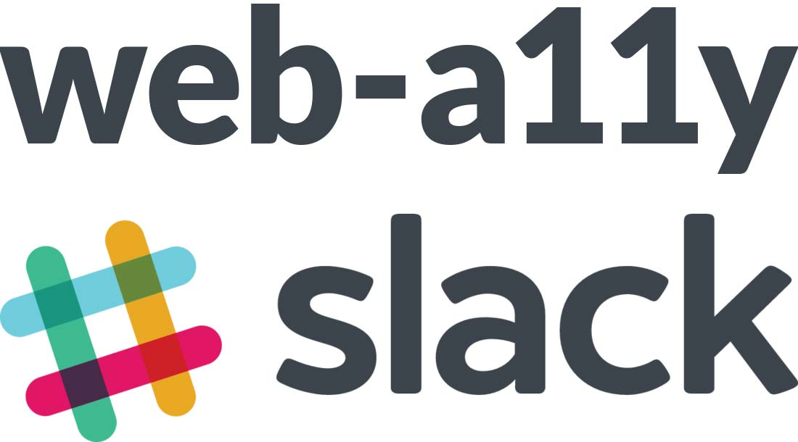
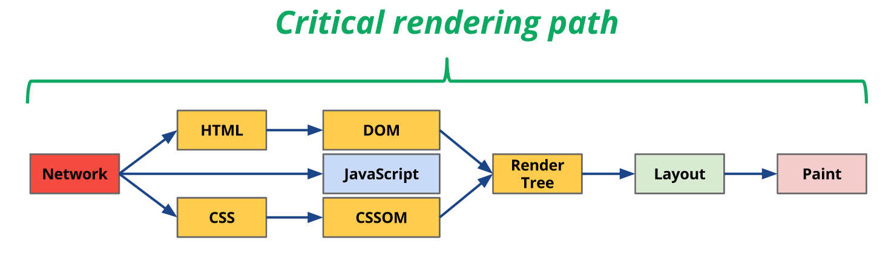
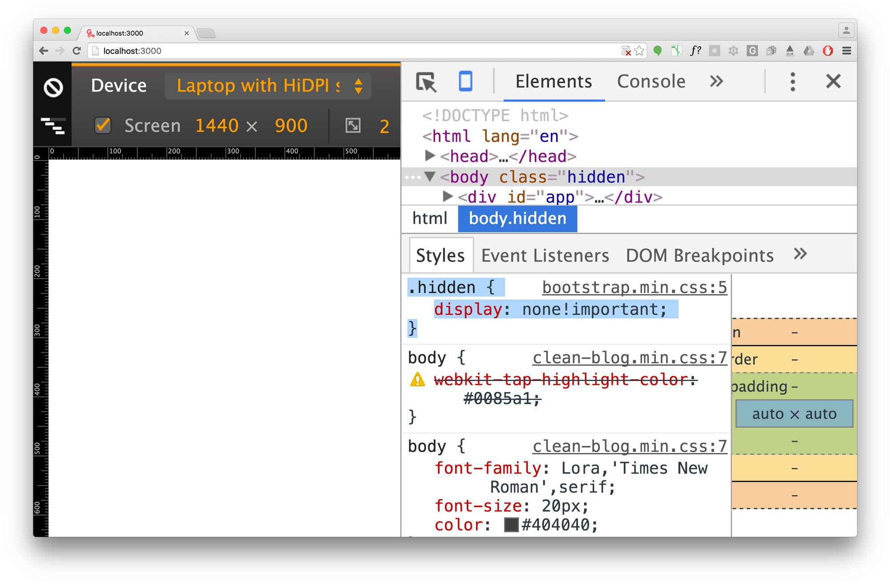
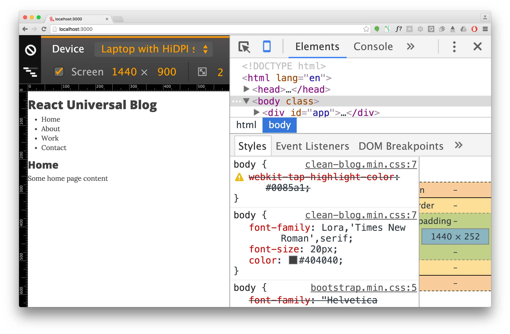
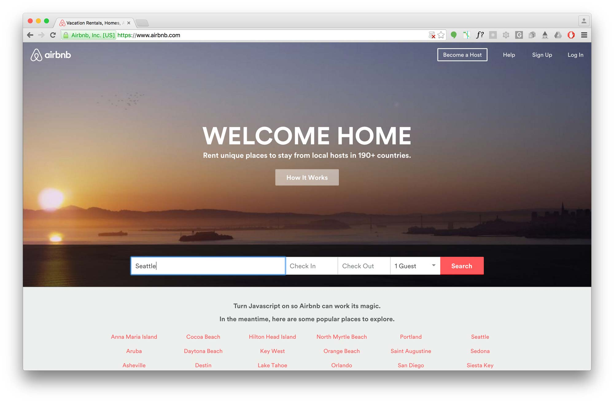
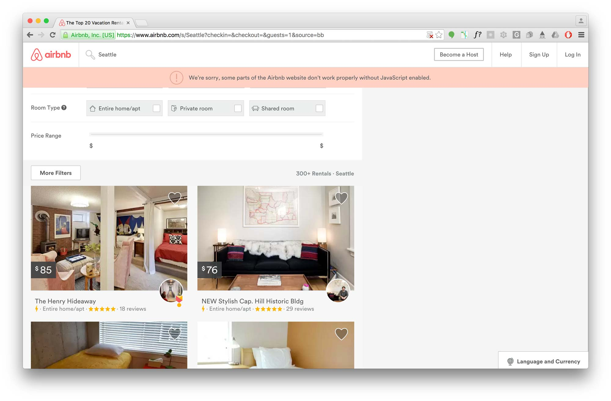
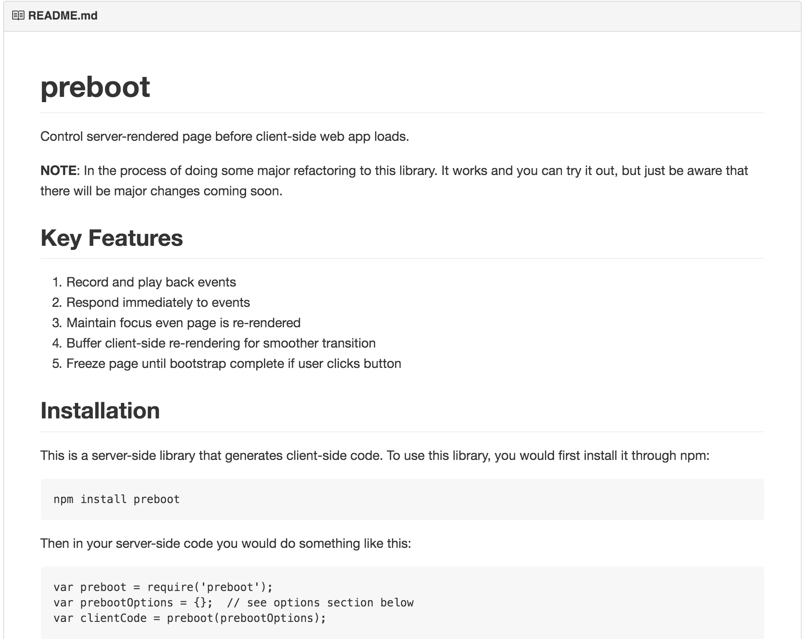

Who is Marcy Sutton?

CNN VoiceOver demo
Performance?

Accessibility
W3.org
The Web is fundamentally designed to work for all people, whatever their hardware, software, language, culture, location, or physical or mental ability.
“You can’t optimize what you can’t measure.”
“[L]etting a website know you’re using a screen reader means running around the web waving a red flag that shouts “here, I’m visually impaired!”… It would take away the one place where blind people can be relatively undetected without our white cane or guide dog…and therefore giving others a chance to treat us like true equals.”
Marco Zehe: Why Screen Reader Detection is a Bad Thing
Navigation Timing API
A11y + Performance:
What do we have?
- Known user impact
- Optimizations
- Universal apps
User Impact:
Interacting with the keyboard
- Are you waiting for JS to load?
- Is the UI thread blocked?
- Does the UI depend on JS for everything?
Not-Progresive Enhancement

User Impact:
Assistive Technology
- Are you waiting for JS to build the DOM?
- What is the loading experience like?
- Is the Accessibility Tree slow to update?
What is the Accessibility Tree?
Objects impacted by HTML, CSS and JavaScript

Things that impact the Accessibility Tree:
Changes in JavaScript that impact layout/reflow
display: none;elem.computedRole
elem.computedNameelem.scrollTop, other scrolly thingswindow.getComputedStyle()
...and much more. Use sparingly while loading.
https://gist.github.com/paulirish/5d52fb081b3570c81e3a
Optimizations
Optimization:
Set default values in HTML
<span role="checkbox" aria-checked="false" tabindex="0"></span>
Update them with JS just fine.
Optimization:
Include keyboard support
in the critical rendering path

Prioritize accessible interactions.
Full-screen GIF and no login modal
Optimization:
Use as many browser defaults as possible
- Buttons & links
- HTML5 inputs
- Focus styles
Everything you customize has to be sent over the wire.
Universal Rendering
a.k.a. "isomorphic JavaScript"
Load the same app from both the server and client
Frameworks
Hotness
Buzzwords
Don’t: Hide Content on Load


Do: Enable core functions without JS


Do: Utilize event playback
Conclusion
- Think beyond visual performance
- Optimize for accessible actions
- Use technology to help more users